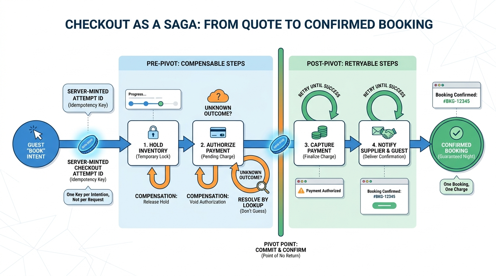

Part V — BOOKING: Making and Keeping the Reservation
Turning an Offer Into a Booking: Checkout Orchestration

Image generated by Google Gemini (gemini-3-pro-image-preview)
Part V — BOOKING: Making and Keeping the Reservation

Image generated by Google Gemini (gemini-3-pro-image-preview)